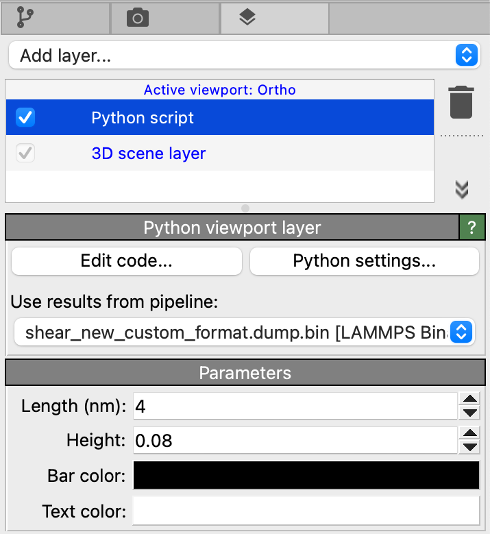
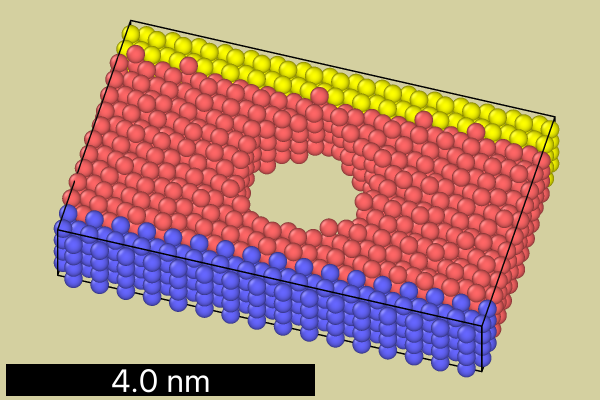

Example O1: Scale bar
{kind=link}
Custom overlay that renders a scale bar with a configurable length into a viewport.
{kind=link}
The implementation makes use of the Canvas.project_length() method
to compute the screen-space length corresponding to a simulation-space distance, which is given
by a configurable user parameter of the overlay class.
from ovito.vis import ViewportOverlayInterface
from ovito.data import DataCollection
from traits.api import Range
from ovito.traits import Color
from ovito.qt_compat import QtGui
class ScaleBarOverlay(ViewportOverlayInterface):
# Adjustable user parameters:
# World-space length of the scale bar:
length = Range(value=4.0, low=0.0, label='Length (nm)')
# Screen-space height of the scale bar:
height = Range(value=0.05, low=0.0, high=0.2, label='Height')
# Bar color:
bar_color = Color(default=(0.0, 0.0, 0.0), label='Bar color')
# Text color:
text_color = Color(default=(1.0, 1.0, 1.0), label='Text color')
def render(self, canvas: ViewportOverlayInterface.Canvas, data: DataCollection, **kwargs):
# Compute the center coordinates of the simulation cell.
center = data.cell @ (0.5, 0.5, 0.5, 1.0)
# Compute length of bar in screen space - as a fraction of the canvas height.
screen_length = canvas.project_length(center, self.length)
# Convert from nanometers to simulation units of length (Angstroms) and
# convert from vertical to horizontal canvas coordinates by multiplying with the h/w aspect ratio.
screen_length *= 10 * canvas.logical_size[1] / canvas.logical_size[0]
# Create a 1-by-1 pixel image for drawing the bar rectangle.
image = QtGui.QImage(1, 1, canvas.preferred_qimage_format)
image.fill(QtGui.QColor.fromRgbF(*self.bar_color))
# Draw the bar rectangle.
canvas.draw_image(image, pos=(0.01, 0.01), size=(screen_length, self.height), anchor="south west")
# Draw the text label.
canvas.draw_text(f"{self.length:.3} nm",
pos=(0.01 + 0.5*screen_length, 0.01 + 0.5*self.height),
font_size=self.height,
anchor="center",
color=self.text_color)